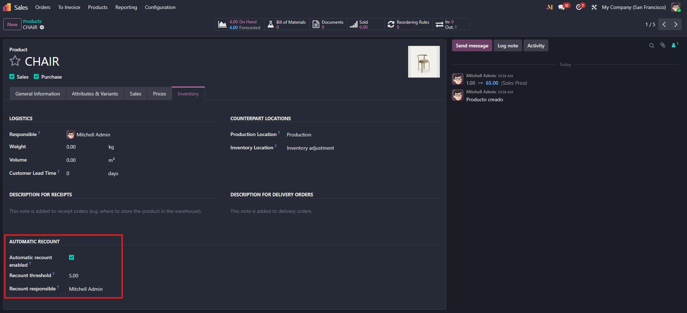
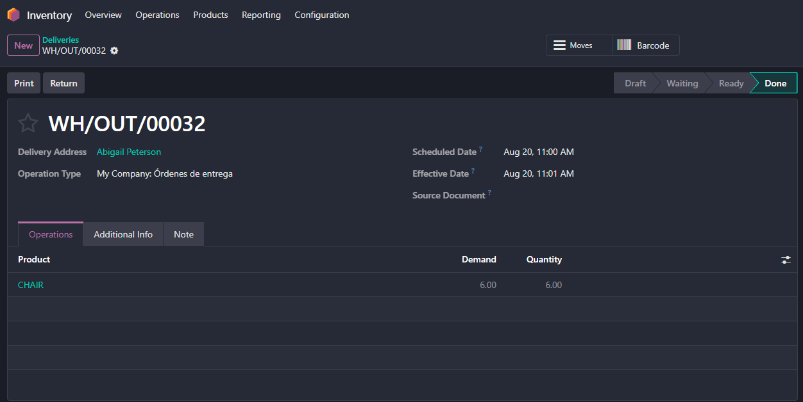
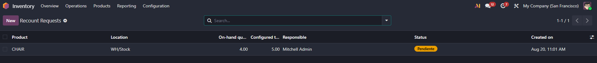

Discrepancies in warehouse inventory often go unnoticed until standard cycle counts. Stock Recount Threshold allows warehouse managers to configure dynamic recount thresholds directly on products and stock movements, automatically generating dedicated recount tasks before inventory errors impact sales or operations.
Automatically create formal recount requests when stock levels breach configured minimum or variance thresholds.
Set custom audit thresholds per product template or category to prioritize high-value or fast-moving items.
Seamlessly integrates into stock moves and picking validations to track changes and audit triggers in real time.
Define the threshold limits directly within the product template inventory view. Specify when the system should flag a product for physical recount.

Whenever stock moves or deliveries push inventory beyond the threshold limits, the system immediately registers a recount requirement.

Warehouse teams get a centralized dashboard to track, assign, validate, or reject recount requests, ensuring full stock accuracy.

Have questions or need assistance tailoring this module to your warehouse workflow? Contact our dedicated support team.